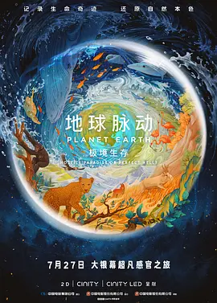

8.7
地球脉动：极境生存
Planet Earth: Hostile Paradise or Perfect Hell?
2024
英国
评分 8.7
导演:
阿比盖尔·利斯（Abigail Lees）
演员:
刘琮
类型:
冒险
剧情简介
影片的拍摄团队历时数年，跨越六大洲四十余个国家，深入那些被视为“地球极境”的生态区域。从漫天风雪的极地到干裂炙热的沙漠，再到蓝黑深邃的深海世界，镜头在自然的呼吸间不断切换，呈现最真实也最残酷的生存状态。在冰原上，动物为了争夺稀缺资源进行隐秘较量；在雨林里，微小昆虫的行为牵动整片生态链；在珊瑚海 10 米以下的阴影地带，摄制设备悄然逼近捕食瞬间，让观众贴近自然界的一呼一吸。轻型无人机穿越峡谷，高速摄影捕捉猎食的刹那，深海潜器则带领人类触摸难得目击的深层物种。影片并不以说教方式呈现生态议题，而是让观众在强烈的视觉对比中自行感受：在某些地方，生命仿佛置身“敌意天堂”；而在另一些地方，严酷环境却孕育出令人惊叹的秩序与生机。每个场景都带着野性的质感，让观者很难不被自然本身的力量所震撼。整部影片以沉浸式叙事串联不同生态区的生命轨迹，将紧迫、宁静、宏大与微小融为一体，使观众在不知不觉间进入自然的节奏之中。它既是一场视觉旅行，也是一段与地球共同呼吸的体验。